IAM Identity Center
① IAM Identity Centerを有効化
1. AWSマネジメントコンソールで東京リージョンを選択し、IAM Identity Centerを開いて有効にするボタンを押下
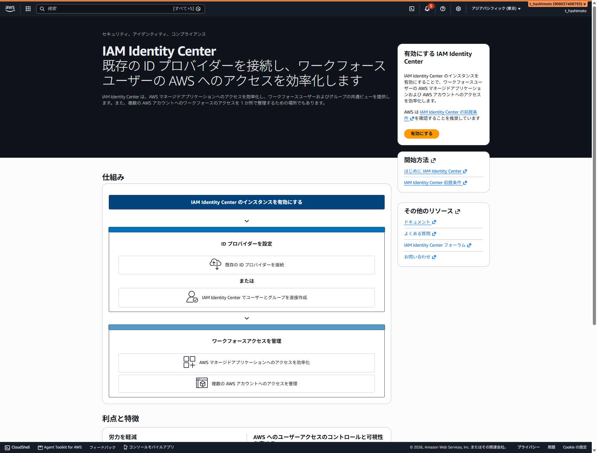
2. AWS Organizations で IAM Identity Center を有効にする画面で単一リージョンインスタンスを選択し、次の設定を確認
| 項目 | 設定値 |
|---|---|
| 保存時の暗号化 | AWS 所有のキー |
| アクセス許可セット | 有効 |
| プライマリリージョン | アジアパシフィック (東京) |
| その他のリージョン | なし |
3. 有効にするボタンを押下
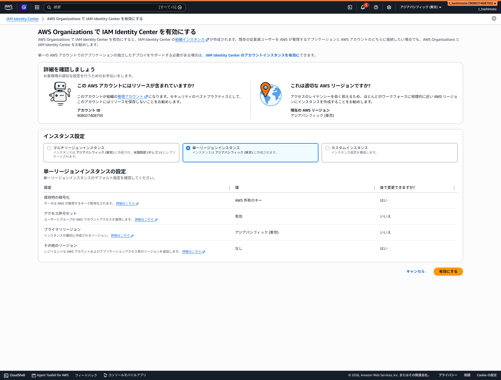
4. ダッシュボードで組織インスタンスの作成完了を確認し、IDソースがIdentity Center ディレクトリ、プライマリリージョンがap-northeast-1であることを確認
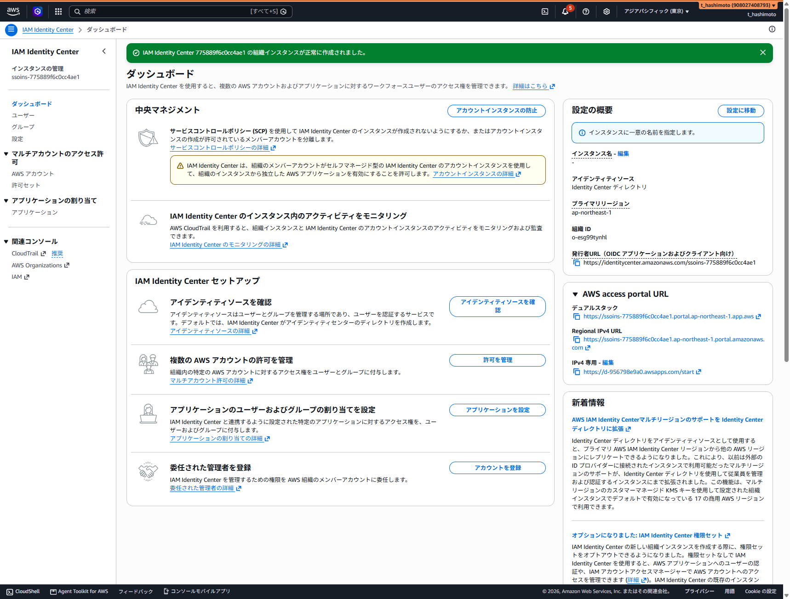
② アクセス許可セットを作成
1. 左メニューの許可セットを選択し、アクセス許可セットを作成ボタンを押下
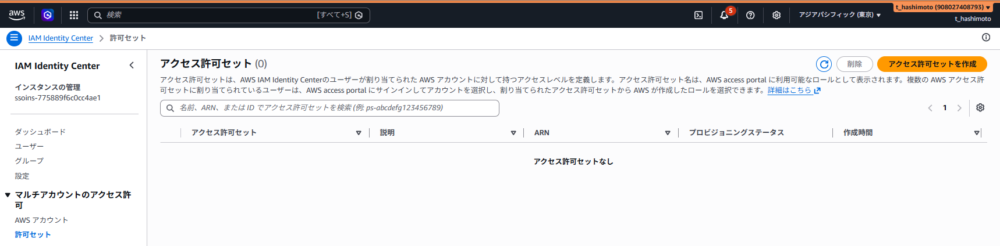
2. 事前定義済みアクセス許可セットを選択し、AWS管理ポリシーからAdministratorAccessを選択して次へボタンを押下
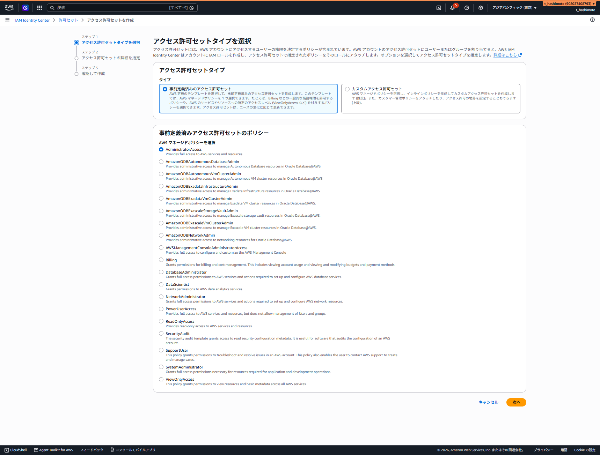
3. 詳細を次のように設定し、次へボタンを押下
| 項目 | 設定値 |
|---|---|
| アクセス許可セット名 | AdministratorAccess |
| 説明 | 空欄 |
| セッション期間 | 1時間 |
| リレー状態 | 空欄 |
| タグ | 追加しない |
4. 設定内容を確認してアクセス許可セットを作成
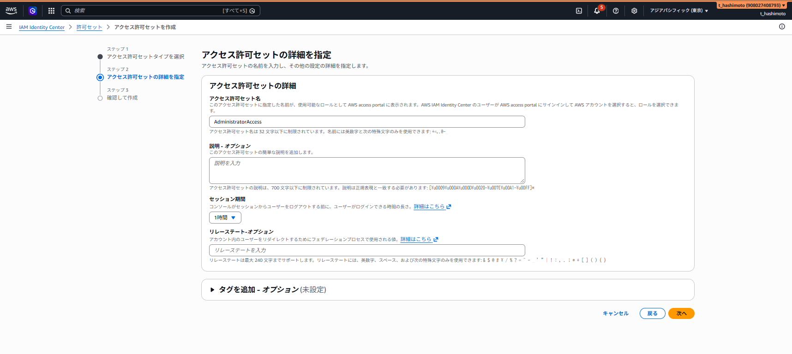
5. 再びアクセス許可セットを作成ボタンを押下し、事前定義済みアクセス許可セットのReadOnlyAccessを選択して作成
6. 一覧にAdministratorAccessとReadOnlyAccessの2件が表示されることを確認
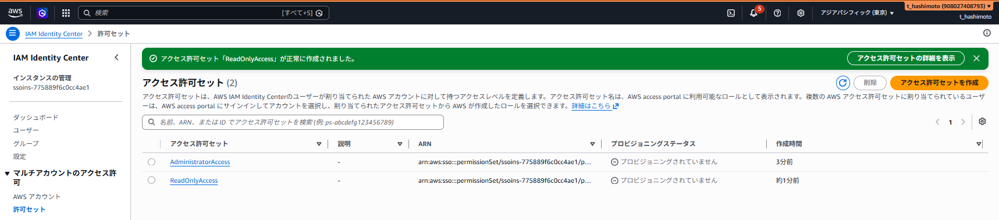
③ ユーザーを作成
1. 左メニューのユーザーを選択し、ユーザーを追加ボタンを押下
2. ユーザーの詳細を次のように入力
| 項目 | 設定値 |
|---|---|
| ユーザー名 | iac-admin |
| パスワード | パスワードの設定手順が記載されたEメールをこのユーザーに送信 |
| Eメールアドレス／確認 | 招待メールを受信する同じメールアドレスを入力 |
| 名 | admin |
| 姓 | iac |
| 表示名 | iac-admin |
3. 次へボタンを押下し、確認画面まで進んでユーザーを追加
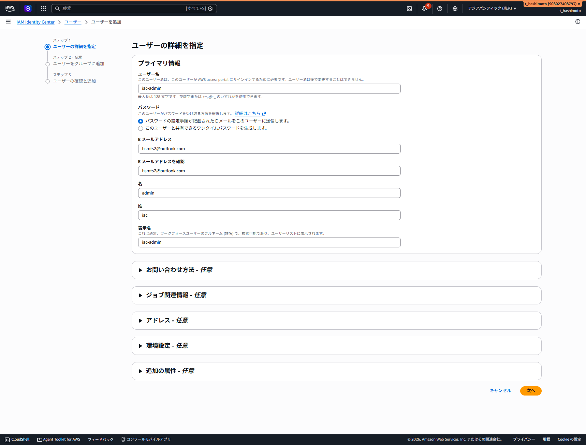
④ 招待メールからパスワードを設定
1. 登録したメールアドレスでInvitation to join AWS IAM Identity Centerメールを開き、Accept invitationボタンを押下
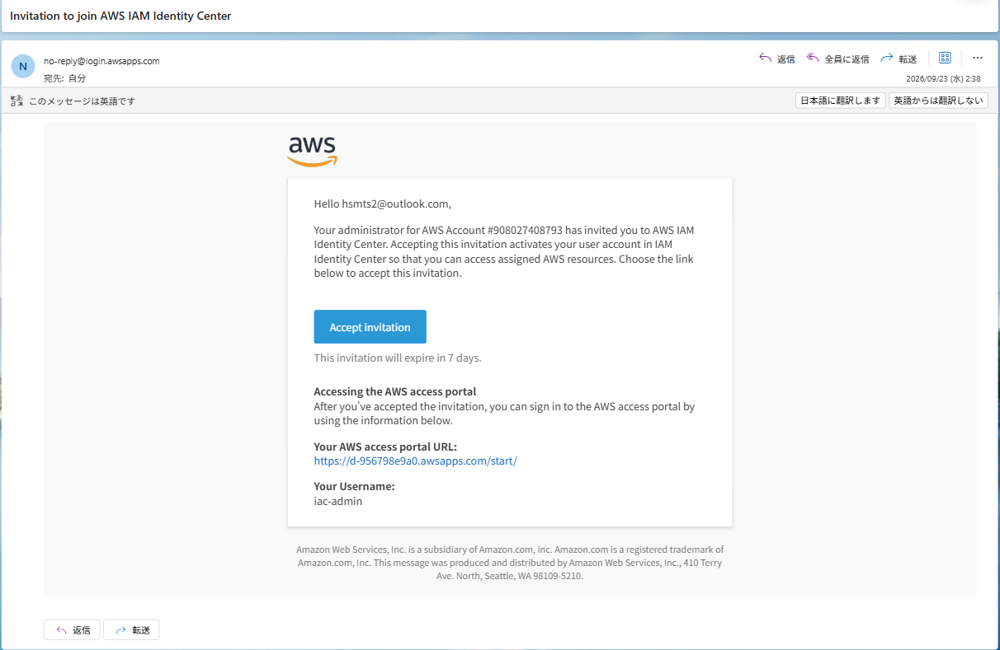
2. New user sign up画面でユーザー名がiac-adminであることを確認
3. New passwordとConfirm passwordに同じパスワードを入力し、Set new passwordボタンを押下
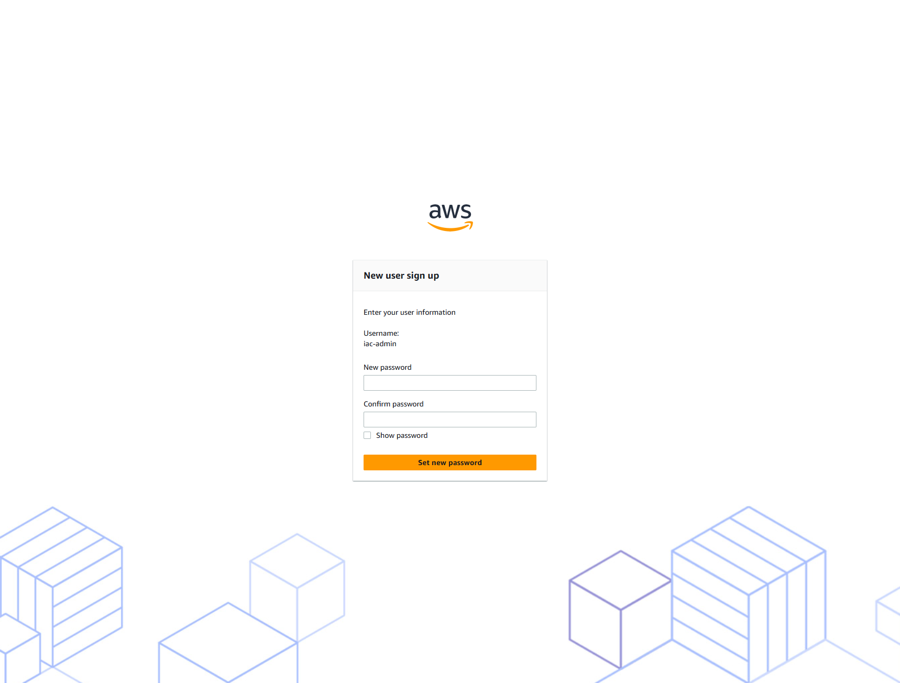
⑤ AWSアカウントに割り当て
1. IAM Identity Centerの左メニューからAWS アカウントを選択
2. Root配下のAWSアカウントt_hashimotoにチェックを入れ、ユーザーまたはグループを割り当てボタンを押下
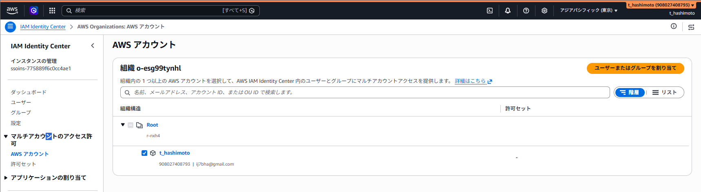
3. ユーザータブでiac-adminにチェックを入れ、次へボタンを押下
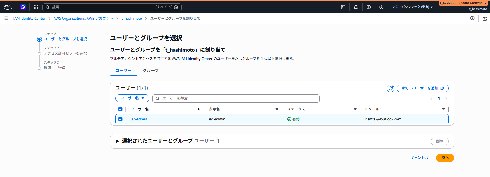
4. AdministratorAccessとReadOnlyAccessの両方にチェックを入れ、次へボタンを押下
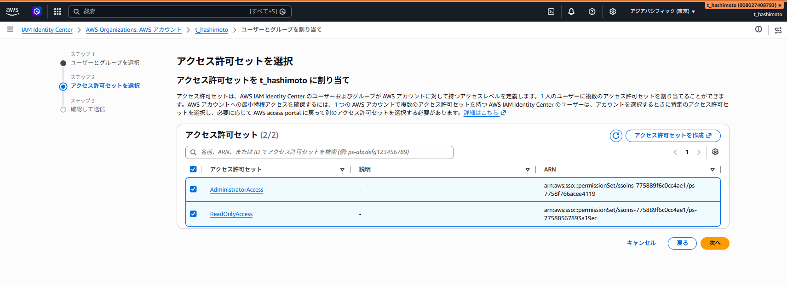
5. 確認して送信画面で対象のアカウント、ユーザー、アクセス許可セットを確認して送信
6. AWSアカウント一覧に戻り、t_hashimotoの許可セット欄にAdministratorAccessとReadOnlyAccessが表示されることを確認
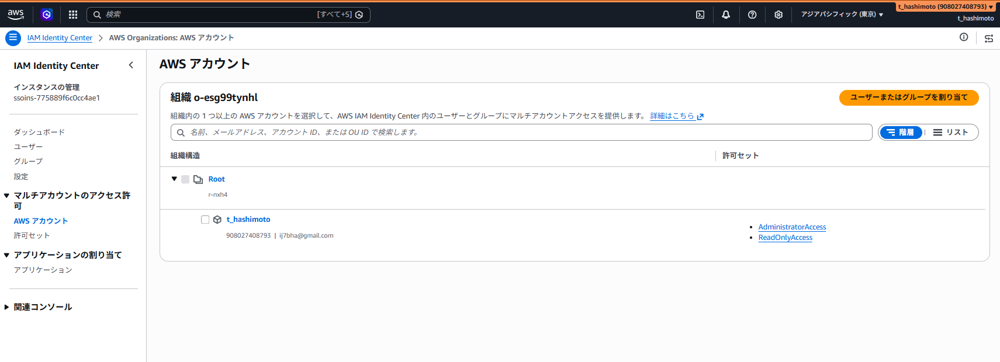